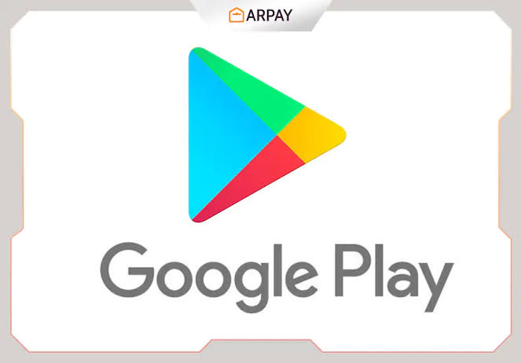
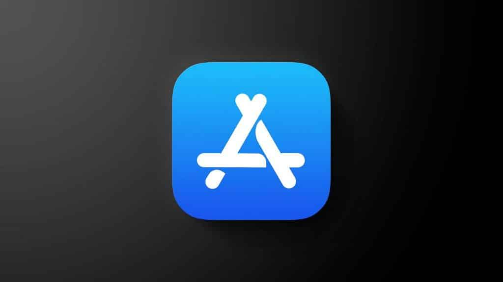
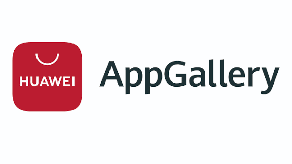

Plataformas y Canales de Distribución de Aplicaciones Móviles

Qué es una plataforma de distribución
Una plataforma de distribución de aplicaciones (app store / marketplace) es un servicio digital donde los desarrolladores pueden publicar sus apps, y los usuarios pueden buscarlas, descargarlas e instalarlas en sus dispositivos. Estas plataformas proveen mecanismos de descubrimiento, revisión de seguridad, políticas de publicación, métodos de pago, actualización automática, entre otros servicios. :contentReference[oaicite:0]{index=0}
Plataformas y sus requisitos / políticas principales
Google Play Store (Android)
- Requisitos: registro como desarrollador, subir la app firmada en formato AAB o APK. :contentReference[oaicite:2]{index=2}
- Políticas: declaración de uso de permisos sensibles (ubicación, cámara, contactos, etc.), cumplimiento de normas de contenido (no contenido prohibido, respeto a privacidad), seguridad de datos. :contentReference[oaicite:3]{index=3}
- Ventajas: gran alcance, infraestructura de distribución, facturación, visibilidad global. :contentReference[oaicite:4]{index=4}
- Desventajas / restricciones: si la app no cumple las políticas puede ser rechazada o removida; necesita cuenta Google para instalar. :contentReference[oaicite:5]{index=5}
Apple App Store (iOS)
- Requisitos: suscripción al Apple Developer Program, uso de certificados oficiales, firma de la app, cumplimiento de guías de interfaz y funcionamiento, políticas de privacidad, pagos in‑app cuando aplica. :contentReference[oaicite:7]{index=7}
- Políticas estrictas: revisión manual de apps, control de calidad, restricciones de contenido, diseño, privacidad y métodos de pago. :contentReference[oaicite:8]{index=8}
- Uso típico: distribución masiva, apps públicas, pero también posibilidad de distribuir apps privadas o empresariales bajo ciertas modalidades. :contentReference[oaicite:9]{index=9}
Tiendas alternativas / marketplaces libres (cuando la tienda oficial no es opción)
- Ejemplos: Huawei AppGallery, tiendas independientes o regionales, repositorios directos — útiles en dispositivos sin acceso a tiendas oficiales o con distribución regional. :contentReference[oaicite:11]{index=11}
- Requisitos y políticas propias: cada tienda define sus reglas de contenido, seguridad y distribución. Conviene revisar cada caso particular. :contentReference[oaicite:12]{index=12}
- Escenarios: distribución en nichos de mercado, dispositivos específicos, o cuando la tienda oficial no está disponible. :contentReference[oaicite:13]{index=13}
Canales de distribución y escenarios de uso

No todas las apps se distribuyen al público general mediante tiendas oficiales. Dependiendo del objetivo, público o entorno, se puede elegir un canal distinto:
Canal público masivo: Publicar la app en Google Play Store o App Store para que cualquier usuario la encuentre, instale y actualice desde la tienda. Ideal para apps comerciales, juegos, utilidades, apps con amplio público.
Distribución empresarial o cerrada: Cuando la app está destinada a un grupo limitado (empleados, grupo de prueba, comunidad), se puede usar distribución privada o tiendas alternativas. En iOS, por ejemplo, existe opción de distribución “privada / sin clasificar” para apps internas. :contentReference[oaicite:15]{index=15}
Distribución regional o por dispositivo: En casos donde la tienda oficial no esté disponible, o se apunte a un mercado o marca específica, se puede usar una tienda alternativa o marketplace que soporte ese ecosistema. :contentReference[oaicite:16]{index=16}
Distribución beta / pre‑lanzamiento: Antes de publicar en producción, se puede distribuir la app a testers mediante canales de prueba (internos, cerrados o abiertos). Esto permite probar funcionalidades, recibir feedback y detectar errores. :contentReference[oaicite:17]{index=17}
La elección del canal depende del tipo de público, alcance deseado, nivel de control, necesidad de feedback o confidencialidad, y del entorno (mercado global, regional, cerrado, corporativo, etc.).
Tipos de Pruebas / Release Channels para Apps
Antes de lanzar una app públicamente, es recomendable hacer pruebas mediante distintas modalidades de distribución — internas, cerradas o abiertas — para asegurar calidad, rendimiento y corregir errores.
Pruebas Internas (Internal Testing)
Versión preliminar distribuida solo a un grupo muy pequeño de testers confiables (equipo de desarrollo, testers internos). No requiere revisión de la tienda, y las versiones pueden compartirse muy rápidamente. :contentReference[oaicite:19]{index=19}
Ejemplo: Un equipo de desarrollo Android sube un build interno mediante Firebase App Distribution para que sus compañeros lo instalen y revisen antes de abrir pruebas externas. :contentReference[oaicite:21]{index=21}
Pruebas Cerradas (Closed Beta / Closed Testing)
Distribución de la app a un grupo seleccionado de usuarios (invitar por correo, lista, grupo). Permite obtener feedback controlado, probar en distintos dispositivos reales, y detectar errores en un entorno más amplio pero limitado. :contentReference[oaicite:22]{index=22}
Ejemplo: En Android, a través de Google Play se configura un “closed testing track” al que solo usuarios invitadas pueden acceder. :contentReference[oaicite:23]{index=23}
Pruebas Abiertas (Open Beta / Open Testing)
La versión de prueba está disponible públicamente (o mediante enlace abierto) para muchos usuarios. Ideal para recopilar feedback amplio, detectar bugs en diversidad de dispositivos y evaluar rendimiento real. :contentReference[oaicite:24]{index=24}
Ejemplo: Una aplicación en fase beta se publica en “open testing” en Google Play para que usuarios interesados puedan unirse y probar antes del lanzamiento oficial. :contentReference[oaicite:25]{index=25}